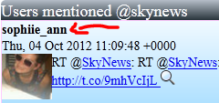
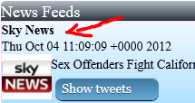
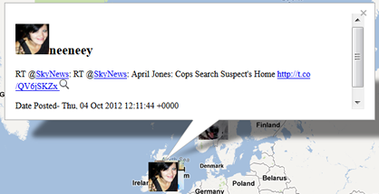

| 1. Select a country/news channel/number of tweets from the dropdowns menus |
| 2. View location of the user OR news tweet on the map |
 Click on a user's name  Click on a channel's name |
| 3. Open infoWindows |
 Click on a user's profile picture |
4. Open URL's |
Click on any of the url's link |
5. Show users talking about the same news event | Click on the button called "show tweets"..! |